Subsections
3. User Interface Layout
IMUNES can be used either through the simple Tcl/Tk based graphical user
interface (GUI) or through the command line interface (CLI).
We will run IMUNES on FreeBSD with some kind of X11 window manager and explain
the main GUI components. If X11 is not running you can start it using
startx command. To run IMUNES GUI use imunes command.
IMUNES GUI is a simple Tcl/Tk based management console, allowing specification
and management of virtual network topologies. Its main parts are the work space
in the middle, called canvas, the menubar on the top, the toolbox on the left
side and the statusbar at the bottom (Figure 3.1)
Figure 3.1:
IMUNES GUI
|
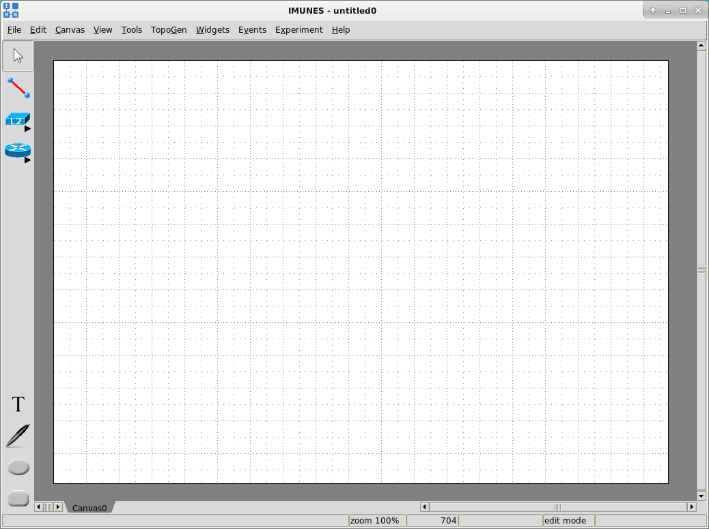 |
The default working mode after the initial start (or after creating a new
virtual network configuration file with the File  New option from
the menubar) is edit mode. The edit mode is used to build and configure network
topologies, contrary to the execute mode whose purpose is the network
simulation. The network simulation will be explained later in the Section
4.1.3.
New option from
the menubar) is edit mode. The edit mode is used to build and configure network
topologies, contrary to the execute mode whose purpose is the network
simulation. The network simulation will be explained later in the Section
4.1.3.
3.1 Toolbox
The toolbox, placed on the left side of the GUI, contains tools for building
network topologies and tools for adding annotations (Figure
3.2).These tools are all available in the edit mode. In
the execute mode, these tools (except for the Select tool) are shaded
and cannot be used.
Figure 3.2:
Toolbox tools
|
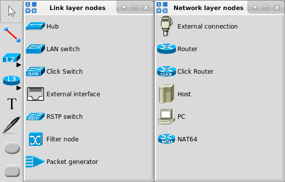 |
Each toolbox item shown in Figure 3.2, is described below.
Selecting elements:
- Select tool - The default tool for selecting and moving elements.
Building the network topology:
- Link - A tool that is used to create network links between nodes.
- L2 - Link layer nodes (center column):
- Hub - A link layer element that forwards every incoming packet to all of its ports and, thus, to every connected node.
- LAN switch - A link layer element that forwards incoming packets to connected nodes using the table of destination addresses and its ports.
- Click switch - A link layer element that forwards incoming packets to connected nodes using the table of destination addresses and its ports (using Click modular switch).
- External interface - A tool that provides the possibility to connect a virtual node with the physical interface (e.g. to give the node the access to the Internet).
- RSTP switch - A Rapid Spanning Tree Protocol switch that can prevent bridge loops and allow providing backup links if an active link fails.
- Filter node - A link layer element that can filter/divert/forward packets depending on their content.
- Packet generator - A link layer element to craft custom packets and send them with given packet rate.
- L3 - Network layer nodes (right column):
- External connection - A tool that provides the possibility to connect your host PC with a virtual node by creating an interface on your computer.
- Router - A network layer element that is capable of packet forwarding using the routes obtained by dynamic routing protocols (available through quagga or xorp by default installation or any other standard FreeBSD routing daemon).
- Click Router - A network layer element that is capable of packet forwarding using the routes obtained by dynamic routing protocols (using Click modular router).
- Host - A network layer element that does not forward packets and has static routes. It starts standard network services, via portmap and inetd.
- PC - A network layer element that also does not forward packets and has static routes. Unlike host, it does not start any network services.
- NAT64 - A router node which is capable to enable translation between IPv4 and IPv6 protocols using a form of network address translation (NAT).
Adding annotations:
- Text - A tool for adding new text on the canvas.
- Oval - A tool for adding a new oval shape on the canvas.
- Rectangle - A tool for adding a new rectangle shape on the canvas.
- Freeform - A tool for adding a new freeform shape on the canvas.
The menubar consists of menus that provide access to various functions (Figure
3.3). Some options from the menubar are automatically disabled
in the execute mode.
The File menu contains options for configuration files management
(Figure 3.4).
Figure 3.4:
File menu
|
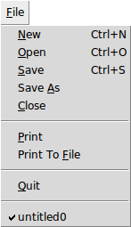 |
- New - Create a new virtual network configuration file.
- Open - Open an existing IMUNES network configuration file (.imn)
by selecting it from the invoked File Open dialog.
- Save, Save As - Save the current virtual network topology
in IMUNES network configuration file format (.imn).
- Print - Print the current canvas using Tcl/Tk PostScript and
send it through the pipe to the default printing command (lpr) (that can
also be changed, (e.g > filename)).
- Print to file - Print all canvases to PDF or PostScript file.
- Close - Close the virtual network configuration file. NOTE: If
the experiment is not explicitly terminated it remains running.
- Quit - Exit the IMUNES GUI.
- Recently used files - A list of recently used files. Clicking on
one of the files opens that configuration file.
The Edit menu contains options for handling elements on the canvas.
Figure 3.5:
Edit menu
|
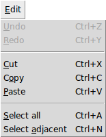 |
- Undo - Undo the last change on the canvas reverting it to an
older state.
- Redo - Reverse the undo command.
- Cut, Copy, Paste - Cut or copy elements from
source and paste them to destination.
- Select all - Select a whole network topology.
- Select adjacent - Select nodes connected to the selected
node(s). This feature is also available through the node menu.
The Canvas menu contains options for canvas management.
Figure 3.6:
Canvas menu
|
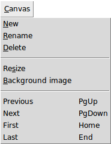 |
- New - Create a new empty canvas.
- Rename - Rename the current canvas through the invoked dialog.
- Delete - Delete the current canvas.
- Resize - Resize the current canvas through the invoked dialog.
- Background image - Change background on the current canvas (see
Section 5.4.2).
- Previous, Next, First, Last - Switch between available canvases.
The View menu contains options for showing / hiding links and nodes
parameters on the canvas, options for changing icon size, zooming options, etc.
Figure 3.7:
View menu
|
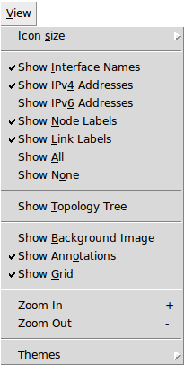 |
- Icon size - Change the size (normal or small) of all network
elements (see Section 5.4.3).
- Show [network element parameter] - Show or hide information such
as interface names, IPv4/IPv6 addresses, etc. These options are usually saved
in the .imn files, providing consistent look of scenarios running on different
computers.
- Show Topology Tree - Show or hide the tree with a list of all
network topology elements.
- Show Background Image - Show or hide background image.
- Show Annotations - Show or hide annotations (text, oval,
rectangle).
- Show Grid - Show or hide grid.
- Zoom In, Zoom Out - Magnify (Zoom In) or reduce
(Zoom Out) the size of the display.
- Themes - Choose one of the themes from the submenu. Each theme
represents a collection of styles, where a style describes the appearance (or
appearances) of a Ttk widget class.
The Tools menu contains the network topology management tools.
Figure 3.8:
Tools menu
|
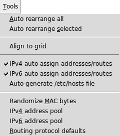 |
- Auto rearrange all - Automatically rearrange position of all
network elements on canvas.
- Auto rearrange selected - Automatically rearrange position of
the selected group of network elements.
- Align to grid - Arrange all network elements on canvas aligning
them to grid.
- IPv4 auto-assign addresses/routes - Automatically assign IPv4
addresses and routes upon creating a new node.
- IPv6 auto-assign addresses/routes - Automatically assign IPv6
addresses and routes upon creating a new node.
- Auto-generate /etc/hosts file - Create a hosts file on
every node and map every other node hostname with its address.
- Randomize MAC bytes - Randomizes the 4th and 5th byte of the
automatically generated MAC address.
- IPv4 address pool - Set variable-mask IPv4 address pool through
the invoked dialog in order to replace default 10.0.0.0/24 address pool (see
Section 5.3.3). This will be applied to all the
subsequentially created network layer elements.
- IPv6 address pool - Set variable-mask IPv6 address pool through
the invoked dialog in order to replace default fc00::/64 address pool (see
Section 5.3.4). This will be applied to all the
subsequentially created network layer elements.
- Routing protocol defaults - Set the routing protocol defaults
(routing model and protocols) through the invoked dialog (see Section
5.3.5). This will be applied to all selected
routers (if any) at the time of change, as well as to all the subsequentially
created ones.
The TopoGen menu contains options for simple and fast specification of
various network topologies (see Section 5.3.2).
Figure 3.9:
Topogen menu
|
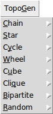 |
The Widgets menu contains options for displaying information about the
virtual network. To see these information, place the mouse pointer on the
virtual node of interest after selecting a widget.
Figure 3.10:
Widgets menu
|
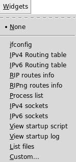 |
- None - Do not show any information about the virtual network.
- ifconfig - Show network interfaces parameters.
- IPv4 Routing table - Show the IPv4 routing table.
- IPv6 Routing table - Show the IPv6 routing table.
- RIP routes info - Show the RIP routing information.
- RIPng routes info - Show the RIPng routing information.
- Process list - Show the running processes.
- IPv4 sockets - Show the IPv4 sockets.
- IPv6 sockets - Show the IPv6 sockets.
- View startup script - Show the startup script /boot.conf
- View startup log - Show the startup log /out.log
- Custom... - Allows the specification of the command that will be
executed inside a virtual node upon placing the mouse pointer on the virtual
node. The result of the command will be displayed inside the widget.
The Events menu - This menu is used to configure event scheduling. The
event scheduling will be explained later in the Section
5.5.
Figure 3.11:
Events menu
|
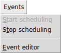 |
- Start scheduling - Start the scheduling of events.
- Stop scheduling - Stop the scheduling of events.
- Event editor - Schedule events on the links through the opened
editor.
The Experiment menu is used to start and terminate an experiment. It
also enables to attach to a running experiment.
Figure 3.12:
Experiment menu
|
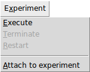 |
- Execute - Start an experiment and switch to the execute mode. In
the process of starting an experiment, IMUNES creates and configures the
virtual network. All events during that process will be shown in the statusbar.
- Terminate - Terminate an experiment and switch to the edit mode.
During the termination process, IMUNES will shut down all network elements and
it will terminate active services on each node. The termination is finished
when the message about the successful cleanup shows up in the statusbar.
- Restart - Terminate and restart the running experiment.
- Attach to experiment - This option opens opens a window with the
list of running experiments on the current computer. It allows to resume
running experiments that are shown in the Attach to experiment window
shown in Figure 5.9.
The Help menu contains the option About that invokes the
About dialog box for viewing version information.
Figure 3.13:
Help menu
|
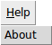 |